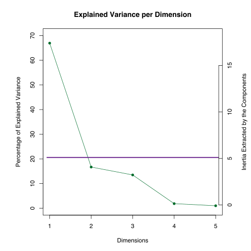

PCA on Beers
Vincent Guillemot, Hervé Abdi, Ju-Chi Yu & Soudeh Ardestani Khoubrouy
Source:vignettes/B1_PCAonBeers.Rmd
B1_PCAonBeers.RmdLoad the data and the packages
With the following command
library(R4SPISE2022)
data("sixBeers12Descriptors10Judges", package = "data4PCCAR")
beers <- sixBeers12Descriptors10Judges$ratingsIntensity
beerColors <- sixBeers12Descriptors10Judges$color4Products
descColors <- sixBeers12Descriptors10Judges$color4Descriptors-
beers: the ratings; -
beerColors: colors for the beers; -
descColors: colors for the descriptors.
More information on the dataset is available on the corresponding
vignette: vignette("A1_DataBeers").
Do the Principal Component Analysis (PCA)
res.pca <- epPCA(beers,
center = TRUE, # Center the data
scale = FALSE, # **Do not** scale the variables
graphs = FALSE) The default of this function will center (to have means equal 0) and scale (to have the standard deviations equal 1) all variables.
Plot the results
res.plot.pca <- OTAplot(
resPCA = res.pca,
data = beers
)-
results.stats: useful statistics after performing PCA, among which one can find the factor scores, loadings, eigenvalues, and contributions; -
results.graphs: all the PCA graphs (heatmaps, screeplot, factor map, correlation circles, loading maps etc.) -
description.graphs: the titles of these graphs, used as titles in the PPTX file.
Correlations of the variables
We can check the data by plotting the correlation matrix between the variables. This correlation matrix is where the components are extracted.
res.plot.pca$results.graphs$correlation
Scree plot
The scree plot shows the eigenvalues of each component. These eigenvalues give the variance of each component (or called dimension in the figure). In other words, the singular values, which are the square root of the eigenvalues, give the standard deviations of these components. The sum of the eigenvalues is equal to the total inertia of the data.
res.plot.pca$results.graphs$scree
According to an elbow test, there are 4 dimensions in this data.
Factor scores (rows)
Here, the observation map shows how the observations (i.e., rows) are
represented in the component space. If center = TRUE when
running PCA, the origin should be at the center of all observations. (If
it’s not, something is off.)
res.plot.pca$results.graphs$factorScoresI12
The result in this plot showed that the first dimension separates
BlueMoon from Hofbrau, and the second
dimension separates BlueMoon and Hofbrau from
FranzDunkel and FranzNatur.
Circle of correlation
The circle of correlations illustrate how the variables are correlated with each other and with the dimensions. From this figure, the length of an arrow indicates how much this variable is explained by the two given dimensions. The cosine between any two arrows gives their correlation. The cosine between a variable and an axis gives the correlation between that variable and the corresponding dimension.
In this figure, an angle closer to 0° indicates a correlation close to 1; an angle closer to 180° indicates a correlation close to -1; and an 90° angle indicates 0 correlation. However, it’s worth noted that this implication of correlation might only be true within the given dimensions. When a variable is far away from the circle, it is not fully explained by the dimensions, and other dimensions might be characterized by other pattern of relationship between this and other variables.
res.plot.pca$results.graphs$cosineCircleArrowJ12
This circle of correlation plot illustrates that Dimension 1 is
Sweet and Alcoholic versus Yeast,
Hay, Bitter, Cereal, and
Toasted; Dimension 2 is Acid and
Fermented versus Cereal and
Toasted. Interestingly, Acid and
Fermented are orthogonal to Sweet and
Hay (which are anti-correlated from each other) on the
first two dimension. On these two dimensions, Cereal and
Toasted are negatively correlated with Malt
and Hop.
Inference plots and results
The inference analysis of PCA (performed by
OTAplotInference) includes bootstrap test of the proportion
of variance explained, permutation tests of the eigenvalues, the
bootstrap tests of the column factor scores \(\mathbf{G}\) (i.e., the right singular
vectors scaled to have the variance of each dimension equals the
corresponding singular value; \(\mathbf{G} =
\mathbf{Q}\boldsymbol{\Delta}\) with \(\mathbf{X =
P}\boldsymbol{\Delta}\mathbf{Q}^\top\)). These column factor
scores are stored as fj in the output of
epPCA.
res.plot.pca.inference <- OTAplotInference(
resPCA = res.pca,
data = beers
) %>% suppressMessages()Bootstrap and permutation tests on the eigenvalues
The inference scree plot illustrates the 95% bootstrap confidence intervals of the percentage of variance explained by each eigenvalue. If an interval includes 0, the component explains reliably larger than 0% of the variance.
res.plot.pca.inference$results.graphs$scree
The bootstrap test identifies one significant dimension explains the variance reliably larger than 0%. The permutation test identifies one significant dimension with an eigenvalue significantly larger than 0.
Bootstrap test on the column factor scores
The bar plot illustrates the bootstrap ratios which equals \[\frac{M_{g_{j}boot}}{SD_{g_{j}boot}},\] where \(M_{g_{j}boot}\) is the mean of the bootstrapped sample of the jth column factor score and \(SD_{g_{j}boot}\) is the bootstrapped standard deviation of the factor score. A bootstrap ratio is equivalent to a t-statistics for the column factor score with the \(\mathrm{H}_0: g_j = 0\). The threshold is set to 2 to approximate the critical t-value of 1.96 at \(\alpha\) = .05.
res.plot.pca.inference$results.graphs$BR1
res.plot.pca.inference$results.graphs$BR2
The results show no significant factor scores for both dimensions that is reliably different from 0.